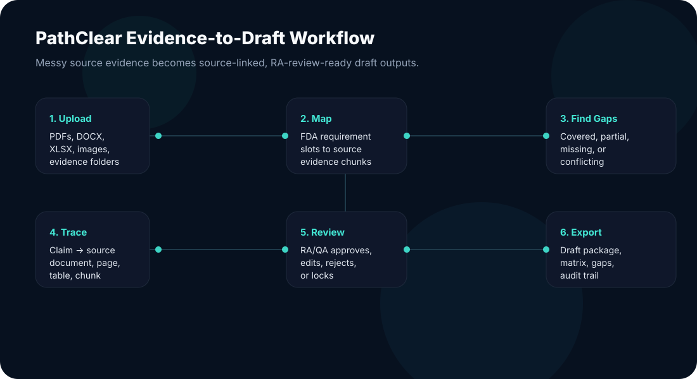

Requirement coverage
Maps uploaded evidence to FDA-oriented requirement slots for FDA 510(k) SaMD workflows.
PathClear is a local-first regulatory evidence workspace that helps MedTech and SaMD teams map messy documents to FDA-oriented requirements, identify gaps, and prepare RA-review-ready draft packages with source links.
Claim: “The software analyzes patient signal data.”
Source: Software_Architecture.docx · page 3 · chunk 08SaMD teams often have technical evidence scattered across IFUs, software architecture files, V&V reports, risk matrices, cybersecurity documents, clinical performance reports, and predicate materials. PathClear helps teams understand what is present, what is missing, and which claims are supported.
Maps uploaded evidence to FDA-oriented requirement slots for FDA 510(k) SaMD workflows.
Flags missing, partial, conflicting, or unsupported information before late-stage review.
Connects source documents, evidence chunks, claims, requirements, gaps, and reviewer decisions.
Exports evidence matrices, gap reports, draft sections, and audit logs for RA/QA review.
PathClear does not ask a vague question like “is this FDA compliant?” It breaks FDA-oriented expectations into evidence slots, probes uploaded evidence, and stores findings with source references.

Upload PDFs, DOCX, spreadsheets, images, or evidence folders into a local workspace.
Select applicable FDA-oriented checks based on pathway, SaMD profile, AI/cyber flags, and predicate status.
Search each evidence slot and connect findings to exact source files, pages, tables, or chunks.
Show critical missing evidence, conflicts, unsupported claims, and remediation suggestions.
RA/QA users approve, edit, reject, or lock claims and requirement coverage.
Generate draft evidence matrices, gap reports, source-linked summaries, and audit logs.
See whether your evidence pack is covered, partial, missing, or conflicting before a formal submission sprint.
Move from manual source hunting to a claim-to-evidence map that supports review and gap closure.
Use PathClear to create evidence inventories, gap reports, and draft packages faster for client review.
PathClear is designed as a local-first desktop workflow so sensitive evidence can remain under customer control. The app records source references, reviewer decisions, and audit events to help teams prepare reviewable regulatory evidence packages.
PathClear is best evaluated through a focused pilot study with measurable outputs: requirement coverage, source-linked claims, gap report, reviewer workflow, and a draft evidence package.
Inventory available evidence, classify uploaded documents, and identify the highest-priority missing or conflicting items.
Discuss pilot scope →Run one scoped workflow: upload evidence, map requirement coverage, flag gaps, and prepare RA-review-ready outputs with source links.
Request pilot studyExtend the pilot into repeat submissions, software modifications, consultant workflows, or additional device evidence packages.
Plan next workflow →Request a pilot or share your use case. We will scope the workflow around evidence readiness, requirement coverage, and RA/QA review.